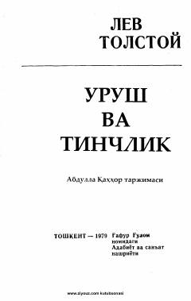

UVLev Tolstoyning mashhur epik romanining Abdulla Qahhor tarjimasidagi 1-kitobi.
Lev Tolstoyning ushbu mashhur epik asari 1805-1812-yillardagi Rossiya va Yevropa voqealarini, xususan Napoleon urushlarini o'z ichiga oladi. Roman jamiyatdagi turli qatlamlar hayoti, urush va tinchlik davridagi insoniy munosabatlarni keng yoritadi. Mazkur nashr 1-kitob bo'lib, Abdulla Qahhor tarjimasida taqdim etilgan.